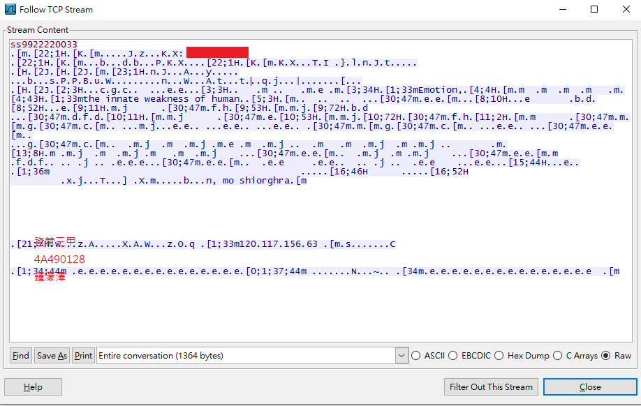
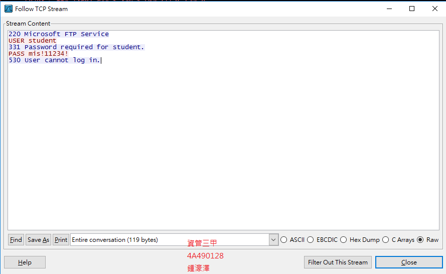
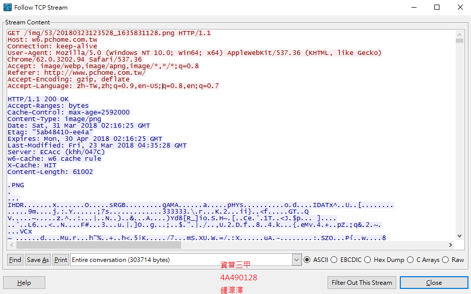
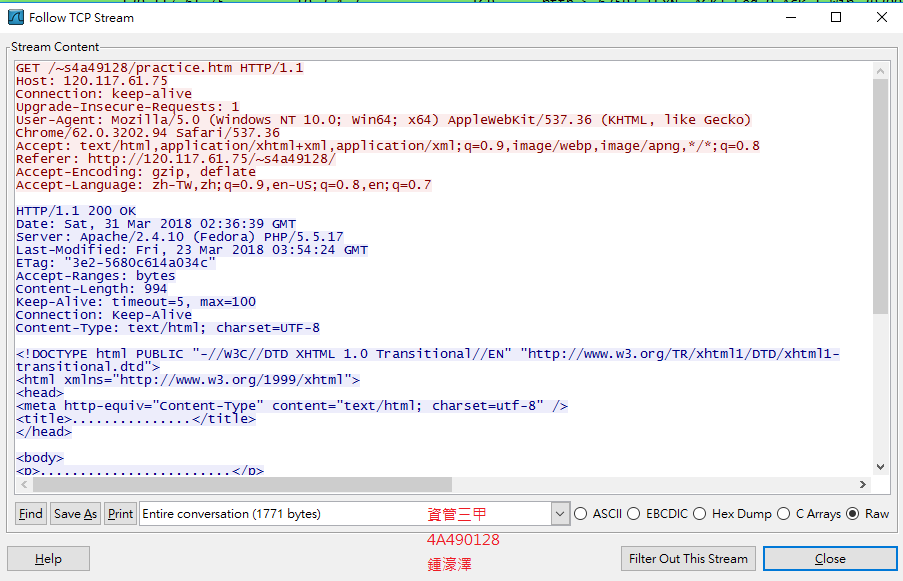
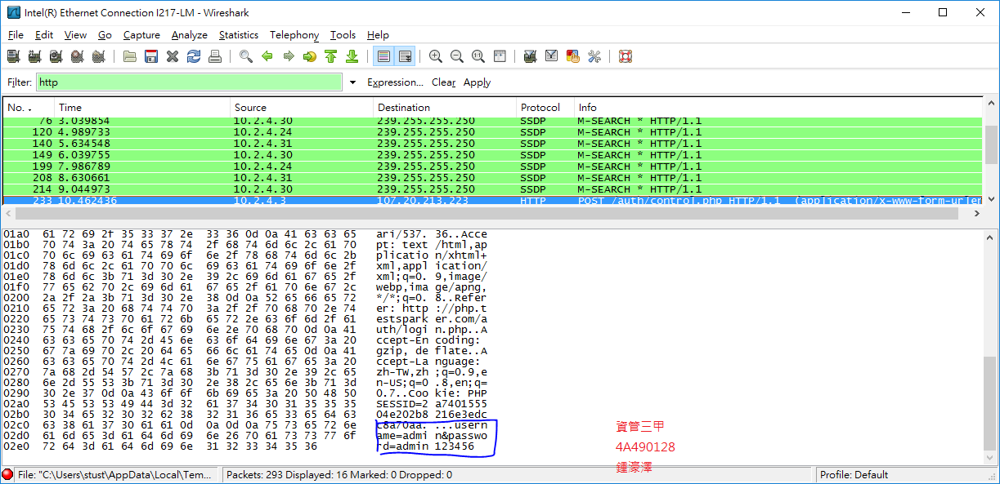

WireShark
使用wireshark擷取封包，透過觀察封包內容來獲得未加密的傳送內容。
1. PTT
ppt使用telnet來傳遞資料，telnet是透過明碼方式傳送，所以可以獲得使用者輸入的帳號密碼。
2. 作業FTP主機(120.117.58.240)
FTP主機也是使用明碼傳輸，所以也可以透過wireShark來看到傳輸內容。
3. PChome
PChome使用https來進行連線，因此只能看到基本的連線資訊，其餘內容皆為加密。
4. 網頁主機(120.117.61.75)
網頁主機使用未加密的http，可以看到網頁的html標籤
4. php.testsparker
網頁主機使用未加密的http，可以看到傳輸的帳號密碼
